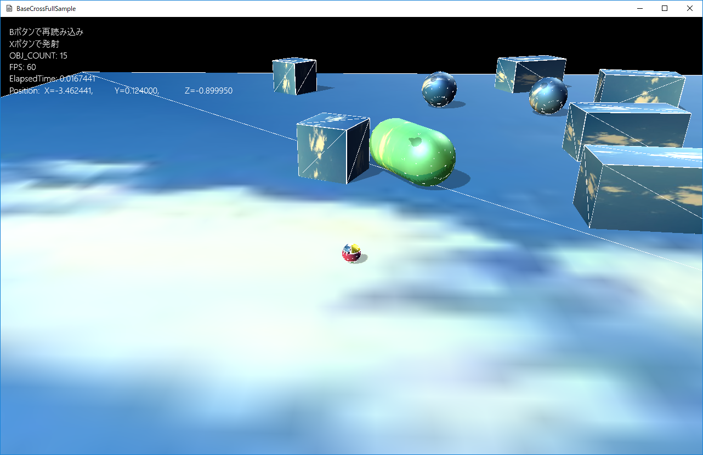
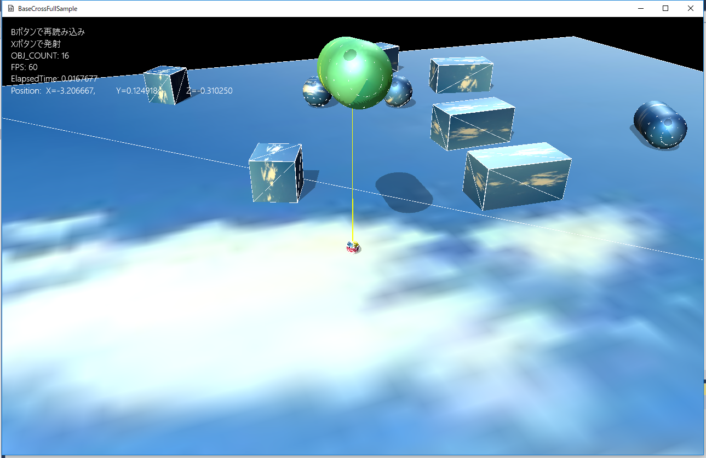

７．物理世界
７０１．物理世界への介入
この章はFullTutorial012に紹介した物理計算をゲームにどのように反映していくか、のサンプルです。
これまでのサンプルとは違い、物理計算とのかかわりを考えながら記述する必要があります。とはいえそんなに難しいことはありません。このゲームオブジェクトは物理計算するかしないかを常に考えながら実装すれば、大きな問題にはならないでしょう。
このサンプルはFullSample701というディレクトリに含まれます。
BaseCrossDx11.slnというソリューションを開くとDx11版が起動します。
リビルドして実行すると以下の画面が出てきます。

図0701a
ここで、Xボタンを押すと球が発射されます。その球をステージ上のオブジェクトに当てると、そのオブジェクトが黄緑色に変化します。

図0701b
その状態で、Yボタンを押し続けると、選択されたオブジェクトが、プレイヤーの上部に引き寄せられます。Yボタンを離すと、そのオブジェクトは落ちてきます。場合によってはプレイヤーの頭から落ちてくる場合もあるので注意しましょう。（だからといってプレイヤーに何か損害が出るわけではないですが・・・）

図0701c
物理世界とのインターフェイス
ここで、注目したいのは物理世界とそれ以外の世界（これまでのBaseCrossの世界）とのインターフェイス（橋渡し）をどうすればいいのか、という部分です。FullTutorial012に紹介したサンプルはすべてが物理世界に入っているので、その部分を意識することはありませんでした。しかし、ゲーム全体を物理世界に入れてしまうと、それこそ、単なるシミュレーションで終わってしまいます。
物理計算をゲームに入れる場合、言い方によってはどのようにして物理世界に介入し変えていくかがポイントになります。
さて、サンプルの画面を見て、どのオブジェクトを物理世界から外すかを考えてみましょう。プレイヤーや配置される物理オブジェクトはお互いに落ちてきたり、衝突したり、反発したりが必要です。台座も必要でしょう。
しかし、発射される球体はどうでしょうか？このオブジェクトを物理世界に入れると、何かに当たった瞬間に、相手が動いてしまいます。このサンプルでは発射される球体は的当てのような役割ではなくオブジェクトの選択です。ですから、物理世界からは外します。
以下、発射される球体（FireSphere）のOnCreate()関数ですCharactrr.cppに記述があります。
void FireSphere::OnCreate() {
auto PtrTransform = GetComponent<Transform>();
PtrTransform->SetScale(Vec3(m_Scale));
PtrTransform->SetQuaternion(Quat());
PtrTransform->SetPosition(m_Emitter);
//コリジョンを付ける（ボリューム取得のため）
auto PtrColl = AddComponent<CollisionSphere>();
PtrColl->SetIsHitAction(IsHitAction::None);
//影をつける
auto ShadowPtr = AddComponent<Shadowmap>();
ShadowPtr->SetMeshResource(L"DEFAULT_SPHERE");
auto PtrDraw = AddComponent<BcPNTStaticDraw>();
PtrDraw->SetFogEnabled(true);
PtrDraw->SetMeshResource(L"DEFAULT_SPHERE");
PtrDraw->SetTextureResource(L"SKY_TX");
GetStage()->SetSharedGameObject(L"FireSphere", GetThis<GameObject>());
}
このようなオブジェクトが、ステージ内に配置されるのは最初にXボタンが押されたときです。それはプレイヤーに記述します。以下はプレイヤーのXボタンハンドラです。
//Xボタンハンドラ
void Player::OnPushX() {
auto Ptr = GetComponent<Transform>();
Vec3 Pos = Ptr->GetPosition();
Pos.y += 0.5f;
Quat Qt = Ptr->GetQuaternion();
Vec3 Rot = Qt.toRotVec();
float RotY = Rot.y;
Vec3 velo(sin(RotY), 0.05f, cos(RotY));
velo.normalize();
velo *= 20.0f;
auto ShPtr = GetStage()->GetSharedGameObject<FireSphere>(L"FireSphere",false);
if (ShPtr) {
ShPtr->Reset(Pos, velo);
}
else {
GetStage()->AddGameObject<FireSphere>(Pos, velo);
}
}
さて、このようにして発射された球は、物理世界との衝突判定をしなければいけません。それを実装しているのは物理コンポーネント側にあります。以下は物理コンポーネントであるPsBodyComponentクラスのCollisionTestテンプレート関数を呼び出します。以下がその関数です
//--------------------------------------------------------------------------------------
/*!
@brief コリジョンとの衝突判定（呼び出しテンプレート）
@tparam T コリジョン型
@param[in] src コリジョンOBB
@return なし
*/
//--------------------------------------------------------------------------------------
template<typename T>
bool CollisionTest(const T& src) {
return CollisionTestBase(src);
}
さらに、CollisionTestBase()関数は仮想関数なので、派生クラスで独自に判定を行うことができます。親クラスでの実装はfalseを返します（つまり衝突してない）。
実際の実装は、例えばPsSingleSphereBodyコンポーネント（一つの球体ボディ）であれば、SPHEREとの衝突判定に対して
bool PsSingleSphereBody::CollisionTestBase(const SPHERE& src) {
SPHERE dest;
auto& param = m_PhysicsSphere->GetParam();
dest.m_Radius = param.m_Radius;
dest.m_Center = GetPosition();
return HitTest::SPHERE_SPHERE(src, dest);
}
一般論ですが物理計算を実装する場合、衝突判定や衝突応答はできるだけ物理計算に任せ、ゲーム側（こういう表現が当たっているかどうかわからないけど、ようは物理計算をしない世界です）からの介入の部分では簡易的なもので充分と考えます。
今回のサンプルでいえば、この判定はホールド（つまり、捕まえるオブジェクト）の判定に使用するだけですし、各オブジェクトは球体が1ターンで突き抜けてしまうほど小さくはありません。
以上はライブラリ側の説明ですが、それを使用するコンテンツ側はFireSphere::OnUpdate()に記述します（Character.cppにあります）。
void FireSphere::OnUpdate() {
auto PtrTransform = GetComponent<Transform>();
if (PtrTransform->GetPosition().y > -20.0f) {
float ElapsedTime = App::GetApp()->GetElapsedTime();
Vec3 Ac = Vec3(0, -9.8f, 0) * 1.0f;
m_Velocity += Ac * ElapsedTime;
auto Pos = PtrTransform->GetPosition();
Pos += m_Velocity* ElapsedTime;
PtrTransform->SetPosition(Pos);
}
else {
//じっとしている
PtrTransform->SetPosition(Vec3(0,-20.0f,0));
}
auto Coll = GetComponent<CollisionSphere>();
//物理オブジェクトを持つ配列の取得
vector<shared_ptr<PsBodyComponent>> PsComptVec;
GetStage()->GetUsedDynamicCompoentVec<PsBodyComponent>(PsComptVec);
for (auto& v : PsComptVec) {
auto g_ptr = dynamic_pointer_cast<ActivePsObject>(v->GetGameObject());
if (g_ptr) {
if (v->CollisionTest(Coll->GetSphere())) {
auto h_ptr = m_HoldObject.lock();
if (h_ptr) {
h_ptr->SetHold(false);
}
m_HoldObject = g_ptr;
g_ptr->SetHold(true);
PtrTransform->SetPosition(Vec3(0, -20, 0));
break;
}
}
}
}
序盤、
if (PtrTransform->GetPosition().y > -20.0f) {
float ElapsedTime = App::GetApp()->GetElapsedTime();
Vec3 Ac = Vec3(0, -9.8f, 0) * 1.0f;
m_Velocity += Ac * ElapsedTime;
auto Pos = PtrTransform->GetPosition();
Pos += m_Velocity* ElapsedTime;
PtrTransform->SetPosition(Pos);
}
else {
//じっとしている
PtrTransform->SetPosition(Vec3(0,-20.0f,0));
}
続いて物理オブジェクトとの判定ですが、まず、自分自身のCollisionSphereを取得しておいて
//物理オブジェクトを持つ配列の取得
vector<shared_ptr<PsBodyComponent>> PsComptVec;
GetStage()->GetUsedDynamicCompoentVec<PsBodyComponent>(PsComptVec);
PsComptVecはコンポーネントの配列なので所持するGameObjectを取得する場合はv->GetGameObject()のように取得します。そうやって衝突判定を行っているのが、そのあとの処理です。
for (auto& v : PsComptVec) {
auto g_ptr = dynamic_pointer_cast<ActivePsObject>(v->GetGameObject());
if (g_ptr) {
if (v->CollisionTest(Coll->GetSphere())) {
auto h_ptr = m_HoldObject.lock();
if (h_ptr) {
h_ptr->SetHold(false);
}
m_HoldObject = g_ptr;
g_ptr->SetHold(true);
PtrTransform->SetPosition(Vec3(0, -20, 0));
break;
}
}
}
if (v->CollisionTest<SPHERE>(Coll->GetSphere())) {
処理を読めばわかるように、どこかにヒットしたら、そのヒットしたオブジェクトをm_HoldObjectというメンバ変数にセットしリターン（break）します。1つだけヒットすればいいのでそのような処理です。すでにm_HoldObjectが有効だった場合は
h_ptr->SetHold(false);
その後あたらしくホールドされたオブジェクトに
g_ptr->SetHold(true);
PtrTransform->SetPosition(Vec3(0, -20, 0));
さて以上がオブジェクトのホールドの処理でした。続いて、オブジェクトを持ち上げる処理です。これはプレイヤーに記述します。
しかしプレイヤーの説明の前に、前述したホールドされたオブジェクトのSetHold()関数の中身を見てみます。以下の内容です。
void ActivePsObject::SetHold(bool b) {
if (b) {
if (m_StateMachine->GetCurrentState() == ActivePsDefaultState::Instance()) {
m_StateMachine->ChangeState(ActivePsHoldState::Instance());
//プレイヤーに自分がホールドされていることを伝える
auto PlayerPtr = GetStage()->GetSharedGameObject<Player>(L"Player", false);
if (PlayerPtr) {
PlayerPtr->SetHoldObject(GetThis<ActivePsObject>());
}
}
}
else {
if (m_StateMachine->GetCurrentState() == ActivePsHoldState::Instance()) {
m_StateMachine->ChangeState(ActivePsDefaultState::Instance());
}
}
}
ここで注意したいのは、ホールドが解けた時は何もプレイヤーに知らせてないことです。
これはこのサンプル特有で、最初にホールドされたオブジェクトが設定された以降は何かしらのオブジェクトがホールドされている状態になるということです。これは通常のゲームであればホールドを解除する（何もホールドしてない状態にする）という操作が必要でしょうが、ここでは実装していません。
さて、そんなわけでプレイヤーにホールドされているオブジェクトを伝えることができました。
そのオブジェクトを引き寄せる処理ですが、プレイヤーのOnPushY()、OnPressY()、OnReleaseY()で行います。
引き寄せるだけならOnPressY()だけでいいのですが、ここで引き寄せているオブジェクトがわかるように、ラインを引きます。すなわちプレイヤーとオブジェクトをつなぐ線です。そのオブジェクトに対する捜査にOnPushY()、OnReleaseY()を使ってます。ActionLineというオブジェクトですが、最初に必要とされたときに、プレイヤーによって作成されます。OnPushY()内です。
//Yボタンハンドラ(押した瞬間)
void Player::OnPushY() {
//ホールドしたオブジェクトがなければ何もしない
auto HoldPtr = m_HoldObject.lock();
if (!HoldPtr) {
return;
}
auto ActionLinePtr = m_ActionLine.lock();
if (ActionLinePtr) {
auto Check = ActionLinePtr->GetEndObj();
auto CheckHold = dynamic_pointer_cast<GameObject>(HoldPtr);
if (Check != CheckHold) {
ActionLinePtr->SetEndObj(HoldPtr);
}
ActionLinePtr->SetDrawActive(true);
}
else {
//ラインの作成
auto LinePtr = GetStage()->AddGameObject<ActionLine>(GetThis<GameObject>(), HoldPtr);
LinePtr->SetDrawActive(true);
m_ActionLine = LinePtr;
}
}
//ラインの作成
auto LinePtr = GetStage()->AddGameObject<ActionLine>(GetThis<GameObject>(), HoldPtr);
ActionLineクラスは起点のオブジェクトと終点のオブジェクトを持ちます。それぞれのオブジェクトの位置の変化により、動的にその線の状態を変えることができます。プレイヤーのホールドオブジェクトの引き寄せが始まったときに、表示させ、終わったときに表示しなくします。終わったときの処理はOnReleaseY()に記述され以下のような形です。
//Yボタンハンドラ(離した瞬間)
void Player::OnReleaseY() {
auto ActionLinePtr = m_ActionLine.lock();
if (ActionLinePtr) {
ActionLinePtr->SetDrawActive(false);
}
}
さて、最後に引き寄せる処理です。プレイヤーのOnPressY()です。
//Yボタンハンドラ(押し続け)
void Player::OnPressY() {
auto Ptr = GetComponent<Transform>();
auto PlayerPos = Ptr->GetPosition();
auto HoldPtr = m_HoldObject.lock();
if (HoldPtr) {
auto PsPtr = HoldPtr->GetDynamicComponent<PsBodyComponent>(false);
if (PsPtr) {
auto PsPos = PsPtr->GetPosition();
float ToY = 2.0f;
if (PsPos.y > 5.0f) {
ToY = 0.0f;
}
PsPos.y = 0;
PlayerPos.y = 0;
Vec3 ToPlayerVec = PlayerPos - PsPos;
PsPtr->WakeUp();
PsPtr->SetLinearVelocity(Vec3(ToPlayerVec.x , ToY, ToPlayerVec.z ));
}
}
}
PsPtr->SetLinearVelocity()のまえに
PsPtr->WakeUp();
これは余計な物理計算をしなくても済むように、物理ライブラリ側で実装されている仕組みです。
また、この仕組みはPsPtr->SetLinearVelocity()を呼び出しても起きないので、上記のように起きろ！と命令してから、速度を変更します。
以上のように、この項では、物理世界への介入のサンプルを説明しました。
ちょっとした実装ではありますが、このように遠くから引っ張り上げるなどの処理を加えると、あたかも超能力や魔法を使ったような動きになるのがわかります。
このように物理世界を実装する場合は、どのようにして物理常識を変えていくかがポイントになるのではないでしょうか。
単なるシミュレーションではなく、いろんなアイディアや世界観にあった不思議の世界を加えることで、逆に物理世界が生きてくるでしょう。